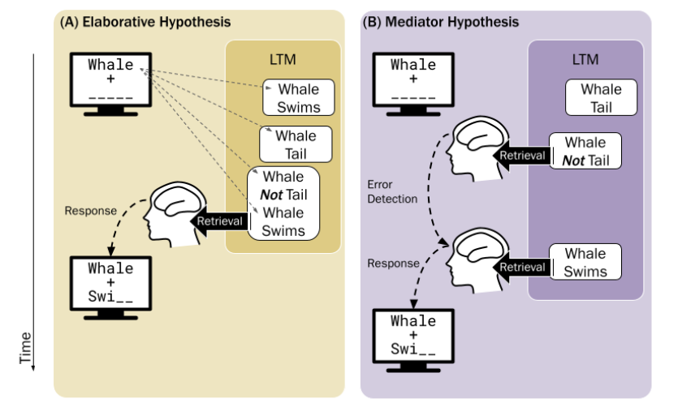

Your App Title
Welcome to the app
Interactive Figures
Modeling
In this study, we investigated two theories of error learning through the lens of a popular cognitive architecture, ACT-R. This allowed us to make empirically supported mathematical predictions of human memory that differ theory to theory, or model to model.
Elaborative Hypothesis
Related errors increase learning by activating the semantic network between cue and target, creating a more meaningful story behind the fact. In ACT-R, this means an error memory would have more activation, or be easier to retrieve and thus, it'd be remembered faster than a normal study memory.
Mediator Hypothesis
Errors are used as a secondary cue to retrieve the correct answer. In ACT-R, this means the error memory is recalled before the correct memory is recalled after. Since this is a two-step process, it takes longer to remember these mediator error memories than a normal study memory.

Elaborative hypothesis = shorter response times
Mediator hypothesis = longer response times
Individual Differences
As seen in the observed data and a model of the data that account for fixed and random effects like individual learning differences, we see that response times are longer in the error condition, supporting use of mediation.